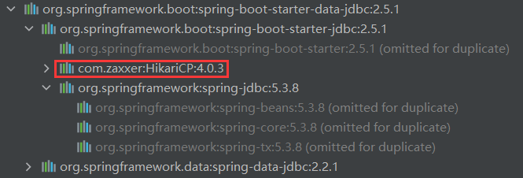

Spring Boot JDBC访问数据库
对于数据访问层，无论是 SQL（关系型数据库） 还是 NOSQL（非关系型数据库），Spring Boot 都默认采用整合 Spring Data 的方式进行统一处理，通过大量自动配置，来简化我们对数据访问层的操作，我们只需要进行简单的设置即可实现对书层的访问。本节，我们将学习如何在 Spring Boot 中使用 JDBC 进行数据访问。
想要在 Spring Boot 中使用 JDBC 进行数据访问，第一步就是要在 pom.xml 中导入 JDBC 场景启动器：spring-boot-starter-data-jdbc，代码如下。
查看 spring-boot-starter-data-jdbc 的依赖树，可以看到，该场景启动器默认引入了一个数据源：HikariCP，如下图所示。
下面，我们通过 JdbcTemplate 来实现对数据库的访问，代码如下。
运行该测试代码，结果如下。
通过以上运行结果可以看出，Spring Boot 默认使用 HikariCP 作为其数据源，对数据库的访问。
导入 JDBC 场景启动器
Spring Boot 将日常企业应用研发中的各种场景都抽取出来，做成一个个的场景启动器（Starter），场景启动器中整合了该场景下各种可能用到的依赖，让用户摆脱了处理各种依赖和配置的困扰。想要在 Spring Boot 中使用 JDBC 进行数据访问，第一步就是要在 pom.xml 中导入 JDBC 场景启动器：spring-boot-starter-data-jdbc，代码如下。
<!--导入JDBC的场景启动器-->
<dependency>
<groupId>org.springframework.boot</groupId>
<artifactId>spring-boot-starter-data-jdbc</artifactId>
</dependency>
查看 spring-boot-starter-data-jdbc 的依赖树，可以看到，该场景启动器默认引入了一个数据源：HikariCP，如下图所示。

图1：默认数据源
图1：默认数据源
导入数据库驱动
JDBC 的场景启动器中并没有导入数据库驱动，我们需要根据自身的需求引入所需的数据库驱动。例如，访问 MySQL 数据库时，需要导入 MySQL 的数据库驱动：mysql-connector-java，示例代码如下。
<!--导入数据库驱动-->
<dependency>
<groupId>mysql</groupId>
<artifactId>mysql-connector-java</artifactId>
<scope>runtime</scope>
</dependency>
Spring Boot 默认为数据库驱动程序做了版本仲裁，所以我们在导入数据库驱动时，可以不再声明版本。需要注意的是，数据库驱动的版本必须与数据库的版本相对应。
配置数据源
在导入了 JDBC 场景启动器和数据库驱动后，接下来我们就可以在配置文件（application.properties/yml）中配置数据源了，示例代码（application.yml）如下。
#数据源连接信息
spring:
datasource:
username: root
password: root
url: jdbc:mysql://127.0.0.1:3306/bianchengbang_jdbc
driver-class-name: com.mysql.cj.jdbc.Driver
注意：此处了解即可，下一节将具体介绍 Spring Boot 的数据源配置及其原理。
测试
Spring Boot 提供了一个名为 JdbcTemplate 的轻量级数据访问工具，它是对 JDBC 的封装。Spring Boot 对 JdbcTemplate 提供了默认自动配置，我们可以直接使用 @Autowired 或构造函数将它注入到 bean 中使用。下面，我们通过 JdbcTemplate 来实现对数据库的访问，代码如下。
package net.biancheng.www;
import org.junit.jupiter.api.Test;
import org.springframework.beans.factory.annotation.Autowired;
import org.springframework.boot.test.context.SpringBootTest;
import org.springframework.jdbc.core.JdbcTemplate;
import javax.sql.DataSource;
import java.sql.SQLException;
@SpringBootTest
class SpringBootJdbcApplicationTests {
//数据源组件
@Autowired
DataSource dataSource;
//用于访问数据库的组件
@Autowired
JdbcTemplate jdbcTemplate;
@Test
void contextLoads() throws SQLException {
System.out.println("默认数据源为：" + dataSource.getClass());
System.out.println("数据库连接实例：" + dataSource.getConnection());
//访问数据库
Integer i = jdbcTemplate.queryForObject("SELECT count(*) from `user`", Integer.class);
System.out.println("user 表中共有" + i + "条数据。");
}
}
运行该测试代码，结果如下。
默认数据源为：class com.zaxxer.hikari.HikariDataSource 数据库连接实例：HikariProxyConnection@659763564 wrapping com.mysql.cj.jdbc.ConnectionImpl@59edb4f5 user 表中共有1条数据。
通过以上运行结果可以看出，Spring Boot 默认使用 HikariCP 作为其数据源，对数据库的访问。
关注公众号「站长严长生」，在手机上阅读所有教程，随时随地都能学习。内含一款搜索神器，免费下载全网书籍和视频。

微信扫码关注公众号